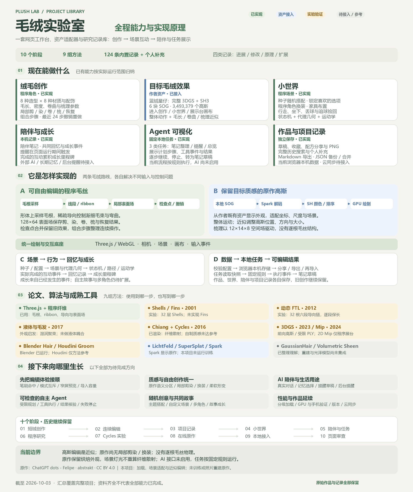

先让喜欢的质感成为可用角色
最初目标是舒适、细密、自然卷绒。我们比较程序纤维、论文算法与成熟毛发工具，保留 Blender / Cycles 的真实样片，再找到截图对应的 Felipe 原作。目前完整许可资产已进入绒毛创作、小世界和展示台；自制候选尚未获得参考质感的认可。
原作由 abstrakt 制作。我们完成加载、场景适配与近似编辑，没有自行生成、重建或训练这份角色。
以我们已生成的总图作为引导，覆盖创作、互动、陪伴、研究与记录。已有能力、实验验证与待接入方向分别标明。

绒毛创作支持八种造型与八种材质、剪染卷梳和恢复、组合步骤及最近 24 步撤销。完整原作高斯已接入绒毛创作、小世界、展示台的同一画布，支持观察、整体动作和高斯近似编辑。小世界支持种子搭配、选项锁定、程序角色换装、家具布置、行走、坐下与追球捡回。陪伴工作室支持本机笔记、页面内提醒、共同回忆及实际事件成长；Agent 展示三个固定本地任务的步骤、工具事件与结果草稿。作品有独立草稿、收藏、配方分享与 PNG；项目记录支持完整历史搜索、个人补充、Markdown 导出与 JSON 备份。
程序毛绒使用形体与毛根采样、线段或渐细 ribbon、稀疏导向形变，以及 128×64 局部表面场，通过检查点合并和撤销记录持续编辑。原作高斯使用六块本地 SOG 与 SH3，由 Spark 解码、计算球谐颜色并排序，适配坐标和尺度，再进行整体运动与高斯显示近似编辑。两条路线共用 Three.js / WebGL 的相机、场景、绘制与交互。
小世界由种子和配置生成场景及代理几何，以状态机、路径与运动学完成互动；实际完成的事件写入回忆与成长。本机数据经校验后保存在当前浏览器来源，可分享或导出；固定任务读取快照，用规则整理结果并生成可编辑草稿。
实时实验包含层壳短绒、稀疏 FTL 保长、湿毛聚束外观，以及程序高斯、二维 Mip 过滤和受限 PLY 交换。离线实验实际使用 Blender Hair Nodes 与 Cycles / Chiang 的毛束造型和纤维散射，自制质感仍未达到参考。Houdini Groom、GaussianHair、体积 Sheen 和 LichtFeld 等参考的使用范围见下方方法区；Spark 负责本地原作显示，二维 Mip 过滤仅用于程序高斯展台。
短绒创作 → 连续编辑 → 项目记录 → 小世界 → 陪伴与任务 → 程序研究 → Cycles 实验 → 在线原作 → 本地接入 → 页面审查。所有原始记录与旧创作继续保留。
真实 AI、长期记忆、后台提醒、自主 Agent、多角色故事、云同步，以及原作局部剪染、换装和柔软形变仍待完成。高斯没有真实毛根与逐根动力学；原作保留烘焙外观，场景灯光不重新计算纤维散射。本项目没有训练或照片重建原作。当前页面审查发现的状态、笔刷反馈、窄屏、模式冲突与导入容量问题仍待修复。
从舒适毛绒的视觉目标出发，形成可以创作、记录、研究和继续生长的个人工作台。
最初目标是舒适、细密、自然卷绒。我们比较程序纤维、论文算法与成熟毛发工具，保留 Blender / Cycles 的真实样片，再找到截图对应的 Felipe 原作。目前完整许可资产已进入绒毛创作、小世界和展示台；自制候选尚未获得参考质感的认可。
原作由 abstrakt 制作。我们完成加载、场景适配与近似编辑，没有自行生成、重建或训练这份角色。
程序毛丝有明确毛根，线段与渐细毛束、稀疏导向和局部表面场支持剪染梳理；检查点合并近期笔触，让创作持续进行。原作高斯保存复杂外观，Spark 解码、排序和计算球谐颜色，整体变换负责动作，高斯位置与方向近似承担毛长、附加卷曲和梳理。
小世界以种子配置、代理几何、路径和状态机协调互动；本机记录与任务快照支持保存、复盘和结果草稿。论文与工具帮助选方法，资产和实际视觉检查决定质感。
创作时调形象、毛料和搭配；学习时比较论文、参数与样片；复盘时查进展、修改和失败原因；日常使用时写笔记、安排页面提醒、留下共同回忆。喜欢的形象、自己的想法和实际做过的事都可以持续积累。
毛绒角色提供一个柔和的入口，陪伴价值需要可靠的记录与行动来支撑。未来 AI 可在这套基础上整理记忆、提出草稿和连接真实执行。
真实 AI 尚未启用，也没有后台推送、云同步或自主 Agent。三个本地任务提供可观察的执行流程。原作高斯的调节是显示近似，暂不支持局部剪染、换装、真实毛根或逐根动力学；它的烘焙外观不会被场景灯光重新进行纤维散射计算。
历史验证只对应当时的轮次。54 个大型 .blend 工程约 3.6 GB 在本机完整保留，公网提供参数、脚本、样片与日志，真实工程不作为下载发布。
工程与公开材料说明 ↗先理解两条毛绒路线，再创作、互动、保存和复盘。
下方可以旋转、弹跳和调相对毛长、附加卷曲。预览仅影响本页；要保存样式，请进入对应工作台。
打开目标毛绒 ↓绒毛创作支持剪染卷梳恢复和组合步骤，近期笔触会合并进无损检查点；小世界可以生成搭配、锁定选项、布置家具、走动、坐下和丢球。原作模式使用自己的近似编辑控件，工具范围不同。
进入绒毛创作 ↗ · 进入小世界 ↗使用草稿、收藏、配方或 PNG 保留创作；在陪伴工作室写笔记、设置页面提醒或运行固定任务；用项目记录补充进展、修改、原理和后续方向。提醒需要页面运行，关页后没有后台推送。
进入陪伴工作室 ↗ · 查阅全部记录 ↓localhost、127.0.0.1 与公网地址是不同来源，旧作品和笔记不会自动迁移到公网。继续打开原来源可读取原数据；按模块现有的配方、作品分享或导入能力迁移支持的格式。项目个人记录支持 JSON 备份和合并导入；陪伴记录可导出 JSON / Markdown，恢复导入尚未实现。
公开项目地址 ↗ · 运行与数据说明 ↗6 个原有工作台网页、4 个资料网页，以及新增工程材料说明；原来的路径和内容继续保留。
总图、背景、原理、意义、原作预览、发展阶段、全部记录与后续方向。
当前页面 ↗ 网页 · 02八种造型与材质、配饰、局部剪染卷梳恢复、组合步骤和作品保存；可切换本地蓝绒星仔。
打开创作 ↗ 网页 · 03随机搭配、选项锁定、着装、家具布置、行走、坐下及球的衰减弹跳与拾回；可切换原作角色。
打开小世界 ↗ 网页 · 04本机笔记、页面提醒、共同回忆、实际事件成长及三个固定任务；真实 AI 未启用。
打开陪伴工作室 ↗ 网页 · 05程序高斯、参数搭配、受限 PLY 交换与完整本地原作两条分支。
打开展示台 ↗ 网页 · 06保留的官方在线查看入口，原作作者、出处和 CC BY 4.0 许可随页标明；依赖网络与原站。
打开历史原作展台 ↗ 资料 · 01GN 对照、V15 完整候选、V16 预览、参数、制作脚本、样片与渲染证据。
查看全部样片 ↗ 资料 · 02保留早期程序毛绒与参考的比较，帮助复查差距；不代表当前原作同画布接入的结果。
查看历史比较 ↗ 资料 · 03九张截图与面板状态、笔刷反馈、窄屏、模式冲突及导入容量的具体问题。
查看审查证据 ↗ 资料 · 04Felipe 的原作出处、许可与项目接入职责；来源说明保留公开署名。
查看来源说明 ↗ 工程材料54 个大型 .blend 工程约 3.6 GB 在本机完整保留。公网可查参数、脚本、样片和日志，真实工程文件不作为下载发布。
查看工程材料说明 ↗从当前摘要读起，或回到完整历史与论文方法，查看输入、运行范围、限制和实验结论。
完整公开理解 ↗ · 项目文档与完整历史 ↗ · 高斯与毛发理解 ↗ · 方法选型 ↗参考原作的柔软绒面、圆润轮廓与自然明暗，并实际试一试当前接入的控制。
把能直接使用的功能、已验证的实验和待接入的能力说清楚。
正在整理全部模块…
完整保留此前的发展过程。查看阶段结果，再回到对应原始记录。
正在汇总项目节点…
网页渲染、毛发结构、离线材质与高斯资产分别解决什么问题，哪些已用到，哪些是后续方向。
正在整理方法与参考来源…
按关键词和类型查找，展开即可查看每条原始记录与对应资料。
正在汇总前期项目记录…
围绕目标质感、连续创作和陪伴价值，保留已经讨论过的扩展方向。
正在整理后续方向…
最近的页面审查是完整项目记录的一部分，继续保留证据与具体问题。